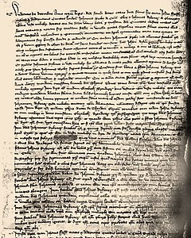

Welcome to Wikipedia,
the free encyclopedia that anyone can edit.5,782,921 articles in English
- Arts
- Biography
- Geography
- History
- Mathematics
- Science
- Society
- Technology
- All portals
From todays featured article

First page of the interrogation notes
John Rykener was a sex worker who was arrested in December 1394 for performing a sex act in women's clothes with John Britby in the Cheapside area of London. The Lord Mayor questioned him on the offences of prostitution and sodomy; a record of the interrogation was found in the 1990s in the City of London archives. Rykener introduced himself as Eleanor. He told the mayor that he had sex with both men and women, including priests and nuns, and that he had paid sexual encounters in Oxford and near the Tower of London. There is no evidence that he was prosecuted for either crime; prostitutes were not usually arrested in London during this period, and sodomy was pursued in ecclesiastical courts. Rykener has appeared in studies of English social, sexual and gender history and as a character in at least one modern work of popular historical fiction. His story has been adapted for the stage. (Full article...)
In the news
Felix Tshisekedi
- Félix Tshisekedi (pictured) is declared the winner of the 2018 Democratic Republic of the Congo presidential election.
- Eight soldiers are arrested and two are killed after a failed coup attempt to oust Gabonese President Ali Bongo Ondimba.
- Patriarch Bartholomew I of Constantinople grants autocephaly to the Orthodox Church of Ukraine in the ongoing schism within Eastern Orthodox Christianity.
- he China National Space Administration's Chang'e 4 becomes the first spacecraft to land on the far side of the Moon.